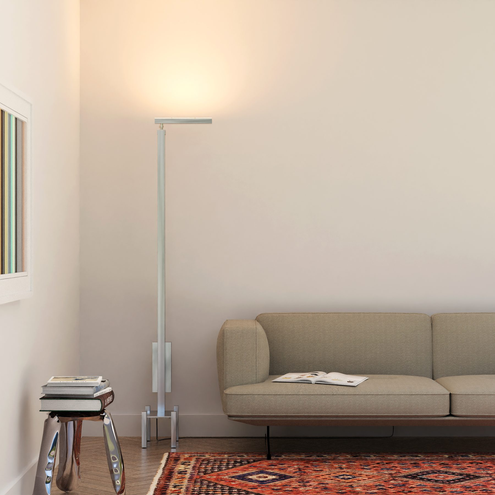

Light brings happiness.
Introducing Layzers: bringing top of the line architectural lighting elements to decorative fixtures, we aim to bring happiness through human centric lighting, intuitive controls, and unique interpretations of typical fixture styles.
Follow us on Instagram for the latest as we launch our first fixture, the illuminator.

The illuminator throws indirect light upward to envelop any space with a soft glow. This fixture utilizes a tunable white LED module that is programmed to correlate color temperature and brightness. This allows the architectural-grade LED to produce the most human-centric light output possible. To further the human connection, the light output is controlled with a physical dimming knob.
Learn More